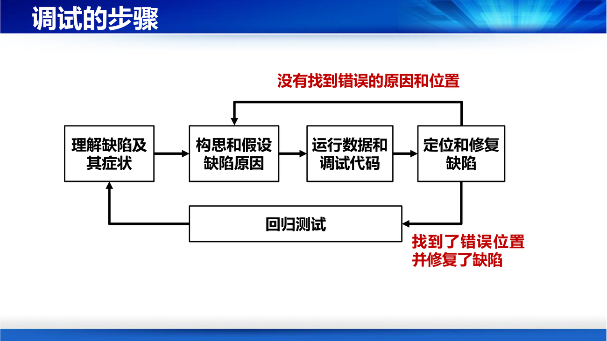
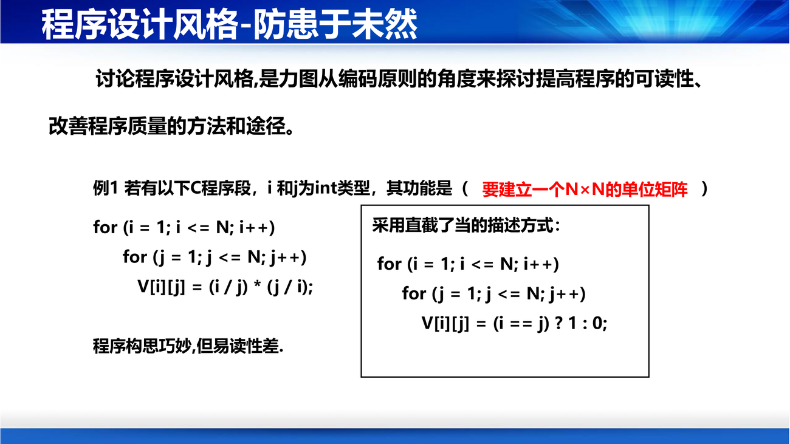

课件第 30 页把这两个概念分得很清楚，考试常考辨析：
| 词 | 定义 |
|---|---|
| 软件缺陷（Defect） | 软件制品中存在不正确的软件描述和实现（是"静态的、写在制品里的"） |
| 程序错误（Error） | 存在缺陷的代码在运行过程中产生不正确或不期望的运行状态（是"动态的、运行时表现出来的"） |
错误的具体表现：经过计算后某个变量取值不正确；接收到的消息内容不正确；打开一个非法文件……最终可能引发程序报错。
补一句话区分：缺陷是"病根"，错误是"症状"。 一个缺陷可能长时间不表现为错误（那段代码没被执行到）；一个错误也可能由多个缺陷叠加造成。这也解释了第 9 讲的测试逻辑：测试只能看到"错误"（运行结果不对），要找到"缺陷"（哪行代码错了）还得靠调试——这正是下面要讲的调试存在的理由。
定义（PPT 第 31 页）：软件调试就是要基于程序代码，确定缺陷的原因、定位缺陷的位置，从而知道"那里错了、如何修复"。
课件给了三个要点：程序员需要花费大量时间和精力用于调试；调试通过运行代码找到缺陷位置；明确原因后开展修复。
调试的步骤（PPT 第 32 页）——这是一个"假设—验证"的循环，值得完整记住：
理解缺陷及其症状
↓
构思和假设缺陷原因
↓
运行数据和调试代码（验证假设）
↓
定位和修复缺陷
↓
回归测试
↑ ↑
没有找到原因/位置 ───────┘（回到"构思假设"）
找到了位置并修复 ────────→ 回归测试
补这个循环的关键是"先假设，再验证"，而不是"随便改改看"。新手调试最常见的错误是"猜着改"——改一处、跑一下、还不行、再改一处，结果把原来的结构改乱，缺陷反而藏得更深。正确的调试是科学方法：观察症状 → 提出可检验的假设（"如果这里越界，那么输入 x 必然崩溃"）→ 设计实验验证 → 修正假设。 第 9 讲会强调"测试"与"调试"是两件事，区别也在这里：测试是发现，调试是定位。

课件第 33 页列了编程中最折磨人的三种情形：
以及一种现实：自己搞了几个小时甚至几天都解决不了。
三条出路：
技术问答社区（PPT 第 34–35 页）：CSDN、Stack Overflow；交流形式是提问、回答、评论。课件的规模数据是：用户 1500 万、问题 2200 万、回答 3200 万、评论 8200 万。
补"提问"本身是一项工程能力，而课件没展开。一条好问题的标准结构是：环境（版本/系统）+ 目标（想做什么）+ 现象（报错原文/截图）+ 已尝试（试过什么、结果如何）+ 最小复现。缺少任何一项，回答者都只能猜——这也是为什么"代码一模一样但结果不对"这类问题几乎无人能答：它缺失了环境信息。
补间歇性缺陷（有时出现有时不出现）是三类里最难的，因为它往往与并发、时序、内存、未初始化变量、外部状态有关。调试它的正确姿势不是"反复跑"，而是加大复现概率：加日志、加断言、固定随机种子、压测、在有问题的环境里保留现场（core dump / 日志）。"能稳定复现"本身就是解决了一半。
课件第 37 页把这一节定位得很清楚：
讨论程序设计风格，是力图从编码原则的角度来探讨提高程序的可读性、改善程序质量的方法和途径。
唯一的示例（也是全讲最有说服力的一页）：
// 版本 A
for (i = 1; i <= N; i++)
for (j = 1; j <= N; j++)
V[i][j] = (i / j) * (j / i);
这段代码"构思巧妙，但易读性差"。它到底在干什么？只有当 i == j 时 (i/j)*(j/i) 才等于 1，否则整数除法会让其中一个因子为 0——所以它在构造 N×N 单位矩阵。
// 版本 B
for (i = 1; i <= N; i++)
for (j = 1; j <= N; j++)
V[i][j] = (i == j) ? 1 : 0;
同一个功能，版本 B 一眼可读。

补这个例子说明"技巧"和"风格"的分界：版本 A 的作者在炫技（用整数除法的副作用表达"是否相等"），版本 B 的作者在表达意图。代码的第一读者是人，第二读者才是编译器。 而且版本 A 还有一个隐藏风险：如果以后有人把 i、j 改成浮点类型，(i/j)*(j/i) 会变成恒等于 1，程序静默出错——技巧型代码往往对类型变化极不健壮。
补课件的图片页（第 38–39 页）没有展开具体的风格条目，这里补几条最常用的（属于补充，不是课件原文）：
| 方面 | 要点 |
|---|---|
| 命名 | 见名知义；变量名用名词、函数名用动词；避免 a、b、tmp1；避免拼写近似（count vs coun） |
| 注释 | 注释解释"为什么"而不是"做什么"（做什么应该由代码本身表达清楚）；改代码必须同步改注释 |
| 布局 | 一致的缩进；相关语句聚在一起；一个函数保持"一屏能看完"的长度 |
| 防御 | 检查输入边界、检查返回值、不用"魔法数字" |
| 避免副作用 | 一个函数尽量不要既改参数又返回值；全局变量能不用就不用（第 6 讲的公共耦合） |
补为什么"注释解释为什么"这么重要？ 因为"做什么"是代码能表达的（i++ 就是加一），而"为什么这里要加一"只有人知道（"因为序号从 1 开始"）。写"做什么"的注释会随代码变化而变成谎言，写"为什么"的注释才是长期资产。 第 10 讲讲维护时"文档与代码不一致"是重大痛点，源头就在这里。
补程序设计风格与第 10 讲的"十大原则"是同一套东西：函数不超过 15 行、分支点不超过 4 个、参数不超过 4 个、类要小、模块松耦合……它们看似是"编码规范"，实质是为了让三个月后的维护者（很可能就是你自己）能读懂。第 10 讲会把这些原则正式列出来。
一句话串起整讲：编码是把设计翻译成可执行代码，它同时是创作和生产——用结构化方法把逻辑想清楚（剑谱），用良好的程序设计风格让别人能读懂（心决），出了错就靠"假设—验证"的调试循环从症状回到病根。
核心结论清单
1. 下面这段代码有什么风格问题？它可能在什么情况下静默出错？
if (status == 4) { ... }
if (flag) { ... } else { flag = 1; }
x = y / 2.0 * 3.14159;
三处典型问题：①魔法数字：4 没有名字，读者不知道它代表什么状态（应为 STATUS_APPROVED 之类的具名常量），且以后状态码变化时要全局搜 4；②逻辑可疑：if (flag) {...} else { flag = 1; } 读起来像"如果标志为真做某事，否则把标志设为 1"，但真实意图可能是"确保标志被设置"，这种写法容易在后续修改中演变成错误；③魔法常量：3.14159 应定义成具名常量（并考虑精度），y / 2.0 依赖 y 是浮点类型——如果 y 是整型，2.0 的存在救了它，但读者需要停下来推理。静默出错的风险点：如果 y 的类型从 double 改成 int，而有人"优化"成 y / 2 * 3.14159，整数除法会先截断，结果错得很隐蔽（无编译错误）。
2. 为什么说"结构化程序设计主要强调程序易读性"而不是效率？举一个课件里的例子。
因为结构化用"单入单出 + 三种控制结构 + 块化"换来的直接收益是可读、可理解、易验证，而不是运行更快；有时还要付出代价。课件的二分法求根例子就是明证：改进版用 finish 标志把 break 换成 while (i <= n && finish == 0)，代码变长了、多了一次标志判断，性能略有下降，但逻辑结构清晰、退出条件显式。这正是工程上的取舍——用一点效率换可维护性，因为维护成本远高于一次判断的开销。
3. 一个缺陷导致了错误，但你在本地怎么都复现不出来。按第 8 讲的方法，你应该怎么办？
按"假设—验证"循环处理，但重点在提高复现概率：①补齐环境信息（操作系统、版本、依赖库、配置、数据规模），最难复现的问题往往源于环境差异；②收集现场证据：日志、堆栈、core dump、监控指标，先看"错误发生时的状态"而不是盲目跑；③提出可检验的假设并设计实验（例如"怀疑是并发时序 → 加锁后是否消失"）；④加大触发概率：压测、并发、固定随机种子、构造边界输入；⑤实在不行按三条路求助（自己钻研 / 找团队高手 / 上技术社区），提问时给出最小复现用例。关键认知：缺陷是病根（静态存在于代码中），错误是症状（依赖运行条件才显现）——复现不出来不等于没有缺陷。
4. 团队里两个人争论"要不要用最新出的语言重写这个模块"。用第 8 讲的准则给他们一个判断框架。
用五条准则逐条打分：①应用领域——新语言在该领域是否有成熟生态（库、框架、工具链）？②执行环境——目标机器/平台能否运行、有无支持软件？③性能因素——新语言能否满足具体性能指标（不是"理论上更快"，而是"实测达标"）？④数据结构的复杂性——新语言构造所需数据结构的能力是否更强？⑤开发人员的知识水平与心理因素——团队是否真的掌握？课件特别提醒"避免受外界影响，盲目追求高、新的语言"。补充一条工程判断：重写的收益必须大于"重写期间旧系统停止演进"的机会成本，而且第 10 讲会告诉你，重写往往丢掉的是那些"没人写进文档、只在代码里"的业务知识。